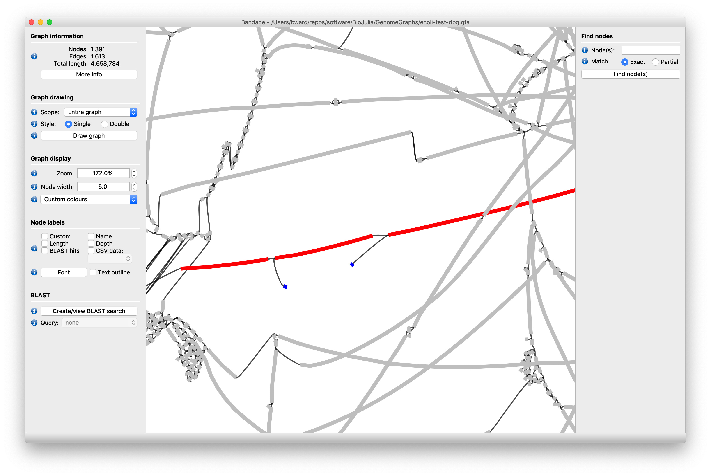

Genome Assembly with GenomeGraphs.jl
Introduction
The genome assembly problem is one of taking raw sequence read data from one or multiple sequencing experiments, and constructing an accurate genome sequence (or sequences).
The hallmarks of an accurate genome assembly is one that:
- Contains the correct motifs...
- the correct number of times...
- and in the correct order.
Read those three again.
... and again.
... ok. As an aside - you may have noticed that metrics commonly reported in genome assembly papers, such as N50 or N95, don't actually tell you much - if anything - about how well your assembly satisfies those three hallmarks.
Ideally at the end of the process the genome assembly would have a single complete sequence for every unique haplotype in the genome. This does not happen for most genome assemblies, but fear not, genome assemblies are perfectly useful for most applications even if they are not 100% resolved.
This guide will take you from raw data to a genome assembly using the GenomeGraphs framework.
One common approach to the problem is to decompose the sequencing data into kmers, So-called "tip" nodes, commonly caused by certain sequencing technologies may also be trimmed from the graph.
Constructing your first de Bruijn graph
A common way to start to produce a genome assembly is to first construct a compressed de Bruijn graph from some raw sequencing data.
This results in a so-called unitig-graph which represents a partially complete solution to your genome assembly problem.
Such a unitig-graph will have placed many motifs into some kind of order. Specifically, all the kmers of a single unitig node's sequence have been placed into an order relative to each other.
However, as per the definition of a de Bruijn graph, many motifs are not present the correct number of times. Motifs that appear more than once in the genome either because of homozygosity or because the motif is common or repetitive are collapsed into single nodes, and so exist in the graph once. Such motifs occur in graph nodes situated in regions of the graph with more complex topology, and genome assembler programs use various heuristics to make decisions to correct the graph's structure in those regions. Successfully resolving such regions results in a simpler graph topology placing more motifs the correct number of times, in the correct right order. The graph topology for a completely resolved genome would look like a set of very long disconnected nodes; one node for each haplotype in the genome.
Let's not worry about regions of complex graph topology and heuristics that solve them just yet. Let's just worry about getting your first compressed de Bruijn graph from raw sequencing data.
This can be achieved with a few simple steps:
- Prepare some sequencing reads.
- Decompose the sequencing reads into kmers.
- Check and filter the kmers.
- Use the
dbgfunction on the kmers.
Let's walk through this process with some E. coli paired end read data.
Preparing the sequencing reads
The first thing we are going to do is prepare a datastore for some paired-end Illumina sequencing reads.
Anyway, let's see how to build a paired end reads datastore!
using GenomeGraphs
ds = read_datastore("test/ecoli_pe_R1.fastq", "test/ecoli_pe_R2.fastq", "ecoli-pe", 250, 301, 0, FwRv)Here "ecoli-pe" is provided as the base filename of the datastore file that will be created in the current working directory.
The minimum length for the reads is set at 250 base pairs, and the maximum length is set to 301 base pairs. Read pairs with a read that is too short will be discarded. Reads that are too long are truncated to the maximum size.
The insert size of the paired reads is set to 0, since I'm not sure of it and right now the value is optional and irrelevant for what we are about to do.
I set the orientation of the paired reads to FwRv. This is the default, and means for every pair of reads, read 1 is oriented in the forward direction, and read 2 is oriented backwards (forwards on the opposite strand). This orientation distinguishes regular paired-end reads from other paired read types like Long Mate Pairs.
Decompose the sequencing reads into kmers
Ok now we have our reads sorted into a read datastore we must decompose the reads into kmers that can be used to build the de Bruijn graph. This is one of the more computationally heavy steps of the process: Counting kmers is simple conceptually, but people are always trying to come up with ways of doing it faster, and on bigger datasets.
Several Kmer counting functions are available for this task, which use different parallelism and memory management strategies. Some store all data in RAM, some use multithreaded or multi-process parallelism, some use disk-backed and indexed datastores.
This is so as the user can pick the strategy according to need. For example, a user lacking the luxury of a large memory machine and with a large dataset, might use a strategy that uses disk batches. Such a strategy would sacrifice some speed as disk accession is costly, but they gain the ability to compute datasets otherwise too big to be workable.
This example is only E.coli though, so a laptop like a MacBook Pro model with 16GB can handle this example just fine. Therefore I'll just use the "serial_mem" kmer counter. This counter uses no parallelism, and keeps all kmers generated in RAM. It takes ~30 seconds for my MacBook pro to run this example.
# Create a serial_mem counter.
sm = serial_mem(DNAMer{31}, CANONICAL)
# Use counter to count kmers in the paired read datastore.
read_kcounts = sm(ds)It is very important to set the mode to CANONICAL!
The serial_mem counter stores an internal buffer of counts and so if you are not going to run the counter again (which would edit that buffer), there's a performance optimisation you can do here to avoid making a copy of the buffer. But you need to import KmerAnalysis, which is one of the packages GenomeGraphs depends on.
import KmerAnalysis
# Create the counter.
sm = serial_mem(DNAMer{31}, CANONICAL)
read_kcounts = KmerAnalysis.count!(sm, ds)Ok now we have a variable called kmers that stores the kmer counts from the read dataset. For every unique canonical kmer in the dataset, there is an entry listing that kmer and its count in the full read dataset.
Check the Kmer Frequency Spectra
Now we have counted the canonical kmers in the read dataset we need to have a look at the kmer frequency spectra and check that we have a decent separation of the distributions corresponding to actual genome content, and the distribution that corresponds to sequencing error.
speccy = spectra(kmers)Graphics and visualisation are currently not built into GenomeGraphs, because julia has a few different plotting frameworks and we don't want to force a user into using one vs the other, and they are also very heavy dependencies.
However, some Makie.jl based visualisation of kmer frequency spectra is provided by KmerAnalysisMakie.jl, which is a Makie companion to the KmerAnalysis.jl package.
using Makie, KmerAnalysisMakie
plot(speccy)
limits = FRect(0, 0, 100, 500_000)
plot(speccy, limits = limits)Ok we can clearly see a nice separation between two distributions. The distribution that shoots off the plot where y = 1, represents all the many kmers in the read dataset that appear only once in the dataset. These kmers are likely the result of sequencing error - assuming the errors the sequencer makes are sufficiently random, and infrequent (which for Illumina Pair End sequencing, is the case).
The second distribution, centred around 40 < x < 50 is the main sampling distribution of the genuine motifs that exist in genome. It is centred on an x axis value approximate to the sequencing depth chosen for the sequencing experiment. This central value makes sense. Say, you chose to conduct a sequence experiment such that the genome should have been covered by the sequencer 50 times, you'd expect genuine kmers that exist in the genome to have been observed ~50 times. Some kmers will be covered more times, perhaps because they are parts of motifs that are common or repeat across the genome. Some motifs don't appear as frequently because of sources of error during DNA sample prep, or are parts of the genome a sequencer finds hard to cover, because of the specifics of how the machines and or their chemistry work. Hence, we get a distribution around a central value close to the expected genome coverage.
We want don't want to include kmers that constitute the error distribution, in our genome assembly, so we will filter to get rid of them. From the plot you can see any x value cutoff of 10 would be fine.
filt_kmers = [mer(x) for x in read_kcounts if freq(x) ≥ 10]Use the dbg function on the kmers
The dbg function is GenomeGraphs' compressed de Bruijn graph builder utility.
It is a fairly simple algorithm to read and comprehend, and runs in a series of "stages" - internal methods that can be easily overloaded for custom types, with sensible fallback defaults that hopefully don't destroy performance.
graph = empty_graph(LongSequence{DNAAlphabet{4}})
dbg!(graph, filt_kmers, 10)Ok, this is one of the more meatier steps of the process.
Check the Kmer Frequency Spectra again
graph_kcount = sm([x.seq for x in graph.nodes])
sect = spectra(reads_kcount, graph_kcount)
spectracn(sect)Run the remove_tips process
Now you have a raw compressed de-Bruijn assembly graph. You can start to use it for analyses, and also try to improve its structure and resolve parts of the graph that represent error, repetitive content, and so forth. Some of these structures can be identified and resolved using only the topology of the graph, some require additional information sources (linked reads / long reads / and so on), to be incorporated into the workspace first.
Here let's see how to resolve a common structure, using only the graph topology.
Let's fix the tips of the graph.
Tips looks like this:

See how a piece of the assembly which should be one long stretch of sequence is broken into 3 pieces (red) because of the existence of two tips (blue). Such tips are defined topologically as very short segments which have one incoming neighbour, and no outgoing neighbour.
Tips are caused by sequencer errors that occur at the end of reads, because the sequencing by synthesis technique becomes more error prone over time; reagents are consumed and products generated as time progresses, making the base detection more difficult. Hence errors occur at the ends of reads, and erroneous kmers from the read ends are unlikely to have forward neighbours, and they end up forming tip nodes when they are incorporated into the de-Bruijn graph.
you can remove these tips and improve the contiguity of the graph by using the remove_tips! process.
remove_tips!(ws, 200)The value of 200 provided is a size (in base pairs) threshold: Nodes are considered tips only if they have one ingoing neighbour, no outgoing neighbours, and are (in this case) smaller than 200 base pairs in length.
Once this process is finished you will have a collapsed de-Bruijn graph with the tips removed.
Using the NodeView interface
Graphs can be complicated data structures. If you want an in depth explanation of the data-structure used to represent genome graphs, then head here.
However, most people should not have to care about the internal structure of the graph.
To make things as simple as possible, the NodeView type provides a single entry point for node-centric analyses. The NodeView wraps a reference to a workspace's graph and contains a node id. A NodeView gives you access to a node's underlying sequence, the nodes neighbouring nodes in the forward and backward directions, the reads mapped to a node, and kmer coverage over the node.
To get a NodeView of a node, use the node method on a WorkSpace, providing a node id number. A positive ID denotes a view of the node traversing it in the forward (canonical) direction. A negative ID denotes a view of the node, traversing it in the reverse complement direction.
julia> n = node(ws, 3)
A view of a graph node (node: 3, graph: sdg):
AAAAAACCTCCGCAACCCCATGTTTTCACATAACTGTTG…GCCATGACCGGCTGGCTGTCAGGCTGTCACTGATAATCA